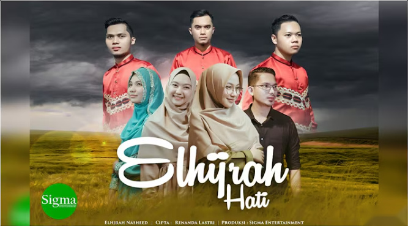
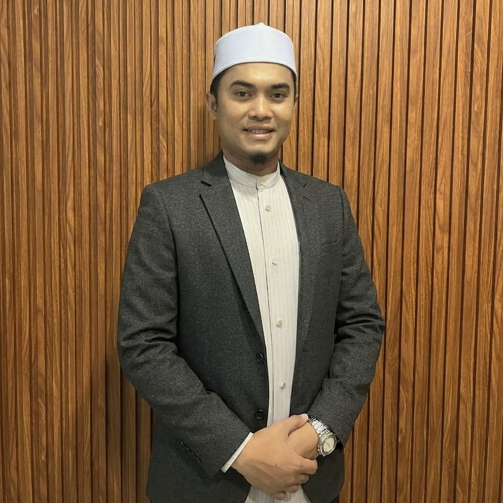
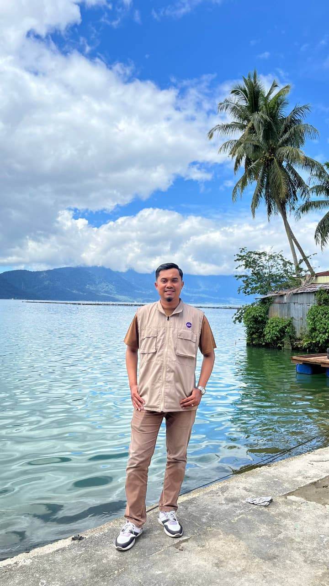
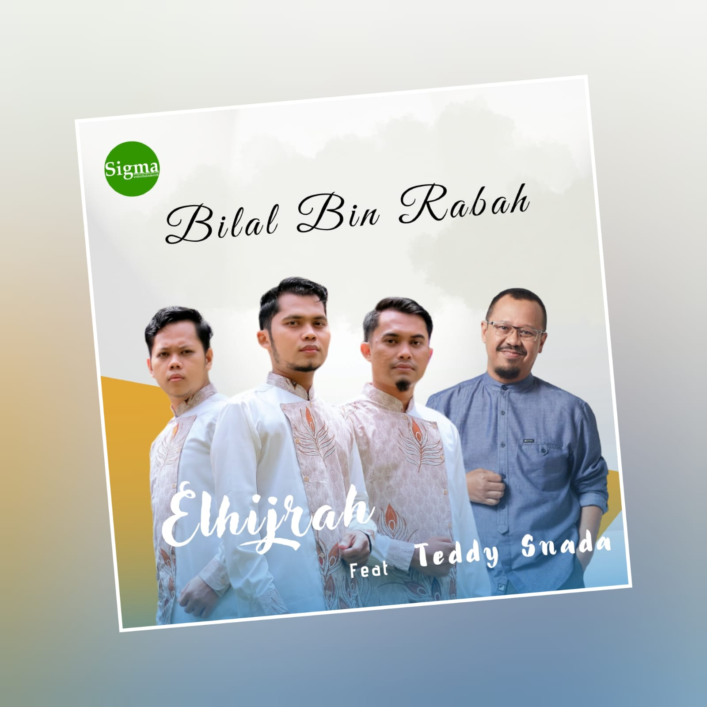
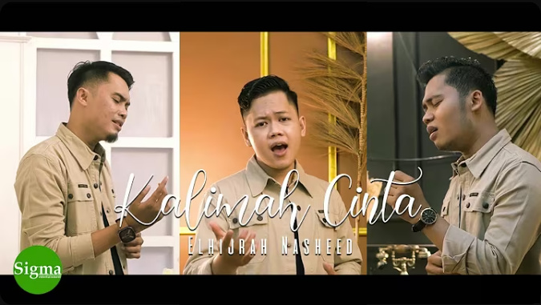
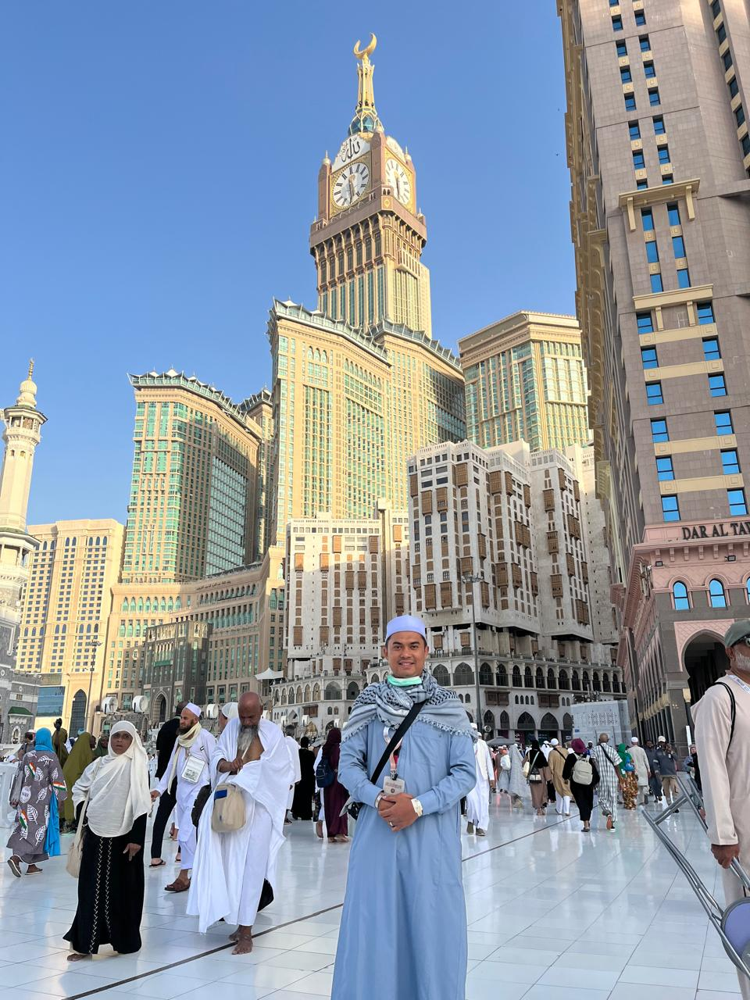
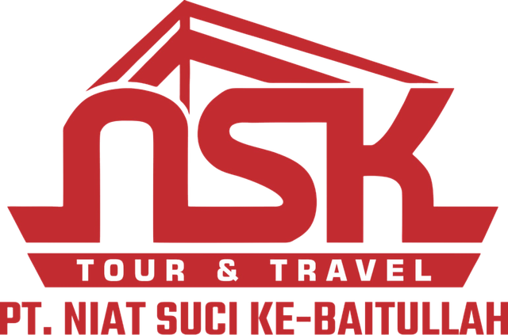

Hati
Lagu religi Elhijrah ciptaan Renanda Lastri (2020), produksi Sigma Entertainment. Liriknya mengingatkan bahwa hati adalah milik Allah dan hanya hati yang bersih yang layak bagi orang beriman.
Lihat karya →Mengajar dan meneliti bagaimana organisasi bisa dikelola dengan lebih baik, dari ruang kelas sampai dunia usaha.

Mempelajari cara memahami kebutuhan pasar, menentukan segmen dan posisi produk, serta menyusun strategi bauran pemasaran yang tepat sasaran.
Membahas cara mengelola proses produksi barang dan jasa agar efisien, berkualitas, dan tepat waktu, mulai dari perencanaan kapasitas sampai pengendalian mutu.
Melatih mahasiswa membaca peluang usaha, menyusun rencana bisnis, dan membangun mental wirausaha yang berani, kreatif, dan tangguh.
Mengkaji bagaimana organisasi beradaptasi menghadapi perubahan, termasuk mengelola resistensi, membangun komunikasi, dan memimpin transformasi dengan baik.
Memperkenalkan strategi memasarkan produk lintas negara dengan memperhatikan perbedaan budaya, regulasi, dan persaingan di pasar internasional.
Membekali mahasiswa dengan langkah meneliti secara ilmiah, mulai dari merumuskan masalah dan mengumpulkan data sampai menganalisis dan melaporkan hasilnya.

Dosen Program Studi Manajemen di Institut Az Zuhra, lulusan S2 Manajemen Universitas Riau. Berkarakter kerja keras, disiplin, teliti, dan mampu bekerja sama dalam tim. Motto hidupnya: menjadi manusia yang selalu berbuat baik dan bermanfaat untuk umat.

Lagu religi Elhijrah ciptaan Renanda Lastri (2020), produksi Sigma Entertainment. Liriknya mengingatkan bahwa hati adalah milik Allah dan hanya hati yang bersih yang layak bagi orang beriman.
Lihat karya →
Video musik nasheed bersama Teddy Snada, produksi Sigma Entertainment (2023), yang mengangkat kisah sahabat Nabi, Bilal bin Rabah.
Lihat karya →
Cover lagu Elhijrah Nasheed oleh Inteam (2021), produksi Sigma Entertainment, dengan aransemen dan mixing oleh Dhion Fandithya.
Lihat karya →

PT. Niat Suci Ke-Baitullah · Pekanbaru
Biro perjalanan ibadah umrah dan haji yang berbasis di Pekanbaru, dan menjadi salah satu kiprah saya di luar kampus.
Harga dan jadwal paket berubah mengikuti musim, kurs, dan kebijakan maskapai. Untuk informasi terbaru, lihat akun resmi NSK.
Terbuka untuk kolaborasi riset, undangan mengisi kelas, ceramah, dan bimbingan mahasiswa.